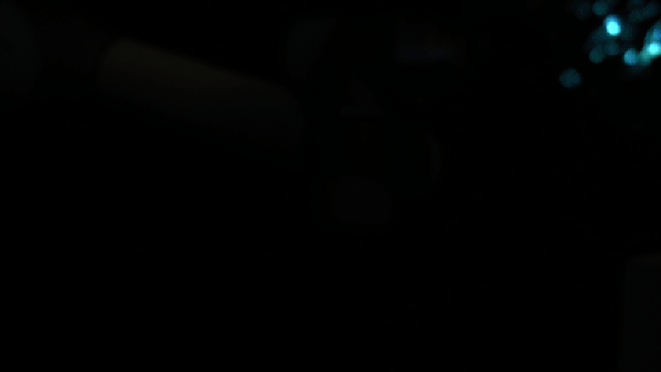
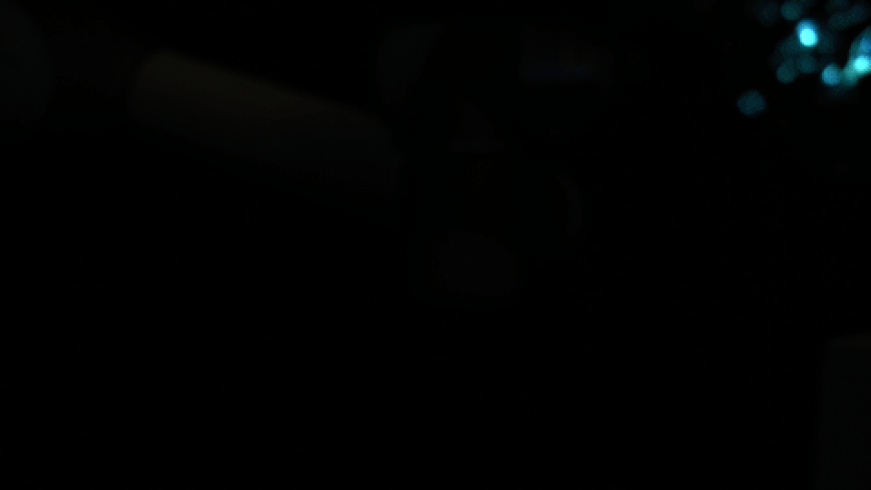

Robotic Organism
Spring 2017
2 Weeks
Collaborators:
Evi Bernitsas
One of my professors inspired me with his thoughts on qualitative interfaces, which portrays design as a channel through which we can understand something about the quality of complex phenomena. This project was an exploration on how vibration and cymatics can be used to communicate the quality of electricity and energy usage.
 

Process
Our idea was to create organic shapes and have the arm become a creature of its own. To visualize this, we decided to use a light to create a long-exposure frame. Since we did not want a static line, we decided to computationally vary the focus during the frame to add a more dynamic element to the shape.
These are some photos of the rig. We had a single Arduino unit control the camera focus and LED color.


Along with our camera setup, we needed a tool, a scoresheet, a canvas that would allow for our painting. We wanted the power to control everything at once, and control exactly what was happening when. This was our solution.
Using OpenFrameworks Timeline, we created a UI that placed all the elements on the same timeline.
To create our desired light streak, I used Adobe After Effects’ Echo time effector.
After Effects allows me to repeat previous frames with the Echo Effector.


Final Thoughts
When robots are able to empathize and acclimate to us instead, I suppose that is when they can truly feel natural and necessary. With this project, I explored in-depth what it looks like to have the “machine” persona disappear to only have the organism remain.